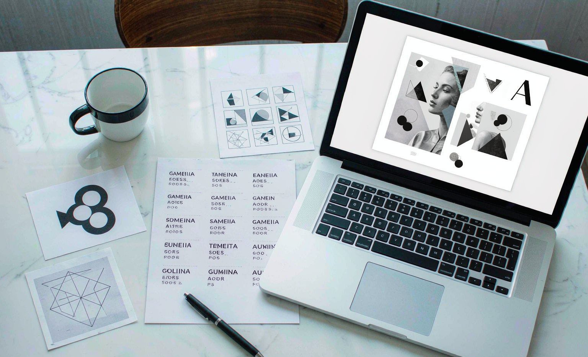

Choosing Fonts for Custom Gifts: A Print Team's Guide to Readable Designs
Short answer: for custom gifts, choose one clean primary font sized for the product's real viewing distance, pair it with at most one accent script, and run the squint test before approving the proof.
Bottom line: the most common font failure is a thin script at small size, so if the design text is under 20 characters, favor bold simple fonts and let the message, not the lettering, carry the personality.

I sit on the proofing side of custom gift orders, and fonts cause more reprints than any other design choice, usually for the same reason: a typeface chosen because it looked beautiful at full-screen size, printed at two inches wide on a mug handle side where it became decoration instead of a message. This guide gives you the rules we apply on the print floor.
Start From Viewing Distance, Not Taste
A mug is read from across a desk, about arm's length; a shirt is read across a room; a blanket is read from a sofa. Size your text for that distance: mugs need letter heights around a quarter inch, shirts need the main line at two inches or taller, and blanket text should survive being read while the blanket is in use, which means bolder, larger, fewer words.
The Two-Font Rule
The strongest designs use exactly two fonts: a clean primary, sans-serif or a sturdy serif, for the main message, and at most one script or display font for a name or a single accent word. Three or more fonts fight each other at print scale. And save ultra-thin scripts for large formats only, because thin strokes under a quarter inch fill in or disappear entirely on fabric and ceramic.
The Squint Test and the Read-Aloud Test
Before approving a proof, step back six feet and squint: if you cannot read the message, neither can anyone else, and the gift fails its one job. Then read the text aloud to someone who has not seen it, and ask them to type it back. This catches the second most common failure, ambiguous letterforms, like a script lowercase L that reads as an I, before it becomes a permanent typo.
Font Rules by Product
| Product | Max fonts | Size guidance |
|---|---|---|
| Mug (11 oz) | 1-2 | Letters about 1/4 inch; short lines |
| T-shirt | 2 | Main line 2 inches or taller |
| Blanket | 2 | Bold, large, minimal words |
| Pillow | 2 | Name or one line at arm's length |
Frequently Asked Questions
How many fonts should a custom gift design use?
Two at most: one clean primary font for the message and one script or display font for a name or accent word. Three or more fonts compete with each other at print scale.
Why does my script font look bad on a custom mug?
Thin script strokes under about a quarter inch fill in or vanish at mug scale, especially on textured ceramic. Save delicate scripts for larger formats and use bold lettering on small products.
How can I check my design before approving the proof?
Run two tests: step back six feet and squint to confirm the message is readable at real distance, then have someone who has not seen it read it aloud and type it back to catch ambiguous letterforms.